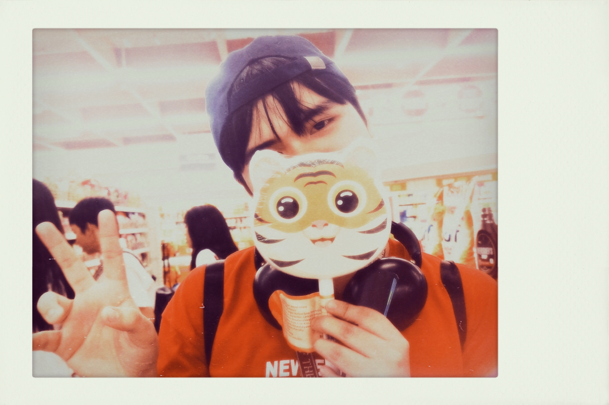

Hi! I'm John Paul Serpajuan

✦ Hi! I'm John, a second-year student at TUP Manila majoring in Computer Programming. I created this website to share information about the amazing skyline cafes in my province, Rizal.
✦ This guide is meant to pull together the absolute best hillside cafes into one clean, organized spot—saving you the hassle of digging through endless social media posts.
✦ I've researched and filtered these spots based on their views, atmosphere, and student-friendly vibe, so you can easily find the best high-altitude coffee in the province.